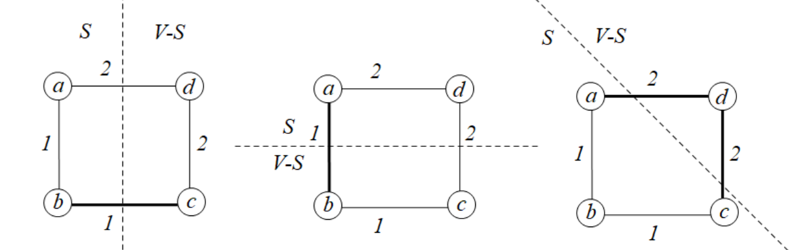
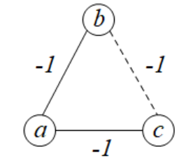

算法导论21.1 Exercises 答案
21.1-1
假设图\(G\)的一个最小生成树\(T\)不包含\((u,v)\)，那么可以构造出一个切割\((S,V-S)\)使得\(u\in S,v\in V-S\)，使得这个切割对\(T\)的某一个子集\(A\)是遵循的，也就是说\((u,v)\)横跨这个切割。
那么，由于\((u,v)\)是一条轻边，那么根据定理20.1，\(A\cup\{(u,v)\}\)仍然是安全的。因此\((u,v)\)是某个最小生成树的边。
21.1-2
令\(G=(V,E),V=\{a,b,c,d\},E=\{(a,b),(b,c),(c,d)\},w(a,b)=1,w(b,c)=2,w(c,d)=3\)。
那么\(G\)的最小生成树就是它本身（因为\(G\)就是一棵树）。
令\(A=\{(b,c)\},S=\{b,c\}\)，那么有\(V-S=\{c,d\}\)。也就是说，边\((a,b),(c,d)\)都横跨了这个切割。实际上，这两条边都是\(G\)的最小生成树的必不可少的边，因此这两条边都是安全的，那么边\((c,d)\)的权值不是最小，因此结论不正确。

21.1-3
我们将使用反证法进行证明。令\(T\)是\(G\)的一颗包含边\((u,v)\)的最小生成树。令\(T_1,T_2\)是从\(T\)删去\((u,v)\)后形成的两棵树，\(V_1,V_2\)分别表示这两棵树的节点集合，那么\((V_1,V_2)\)就是所求切割。接下来使用反证法证明\((u,v)\)是这个切割的一条轻边。如果存在\(a\in V_1,b\in V_2\)使得\(w(a,b)<w(u,v)\)，那么通过\((a,b)\)连接这两棵树\(T_1,T_2\)，可以得到一个比\(T\)更优秀的最小生成树，这明显是错误的。因此，这时\((u,v)\)是切割\((V_1,V_2)\)的轻边。
21.1-4
令\(G=(V,E),V=\{a,b,c,d\},E=\{(a,b),(b,c),(c,d),(a,d)\},w(a,b)=w(b,c)=1,w(c,d)=w(d,a)=2\)。
那么对于\(S=\{a,b\}\)这个得到的切割，\((b,c)\)所求边，\((a,b)\)也类似。
对于\(S=\{a,b,c\}\)这个得到的切割，\((a,d),(c,d)\)都有成为轻边的可能性。
因此，这个集合在这个例子中就相当于\(E\)。然而\(G=(V,E)\)并不是最小生成树。

21.1-5
这里题目需要给定一个前提：\(e\)不是桥。
当求出\(G'=(V,E-\{e\})\)的最小生成树\(T\)后，构造一个遵循\(T\)的某个子集\(A\)的切割\((S,V-S)\)，并且边\(e\)横跨这个切割。可以发现，对于任意满足条件如上的切割，边\(e\)的权值都不是所有横跨中最小的一个。因此从\(A\)添加\(e\)不是安全的，所以\(G\)中存在一棵不包含\(e\)的最小生成树。
21.1-6
使用反证法来证明这个结论。假设图\(G\)有两棵不相同的最小生成树\(T_1,T_2\)。那么存在两条边\((u,v),(a,b)\in E\)，满足\((u,v)\)仅存在\(T_1\)中，\((a,b)\)仅存在\(T_2\)中。令\(S=\{a,u\}\)，那么在切割\((S,V-S)\)中存在唯一一条的轻边。不失一般性，如果这条边是\((a,b)\)（另一种情况则是\((u,v)\)。），那么我们可以将\(T_1\)中路径\(a-b\)上另一条横跨\((S,V-S)\)的边删去，并补上\((a,b)\)这条边，那么我们得到了一个比原来更优的最小生成树\(T_1'\)。然而\(T_1,T_2\)本身就是最小生成树，这是不可能的。因此最小生成树唯一。
令\(G=(V,E),V=\{a,b,c,d\},E=\{(a,b),(b,c),(c,d)\},w(a,b)=w(b,c)=w(c,d)=1\)。那么\(G\)的唯一一个最小生成树明显就是它自身。
并且，对于切割\((\{b,c\},\{a,d\})\)，一共有两条轻边\((a,b),(c,d)\)，这不是唯一的轻边。

21.1-7
本题采用反证法进行证明。对于图\(G\)中的某一个连接所有节点的最小权值和边集\(A\)，如果它不是一棵树，那么必定存在一个环\(C\)，对这个环去除任意一条边\((u,v)\)，并不影响整个图的连通性；并且由于\(w(u,v)>0\)，去除这条边的边集权值和更小，并且不影响整个图的连通性，这和\(A\)有最小权值和是矛盾的。因此原结论成立。
如果边权是负数，那么结论不成立。令\(G=(V,E),V=\{a,b,c\},E=\{(a,b),(b,c),(a,c)\},w(a,b)=w(b,c)=w(a,c)=-1\)。按照上面的结论，最小边集权值和的一棵树为\(-2\)。然而实际上具有最小边集权值和的是\(E\)本身，为\(-3\)。

21.1-8
这题想表达的意思是，对于\(G\)的所有最小生成树\(T=(V,E')\)，无序多重集\(\{w(x,y)\mid (x,y)\in E'\}\)总是同一个集合。
假设\(G\)的两棵不同的最小生成树\(T,T'\)的边权有序列表为\(L,L'\)，并且\(L\neq L'\)。不失一般性，可以找到一个最小的\(i\in[1,|V|)\)，使得\(w(L[i])< w(L'[i])\)成立（可以知道，\(L\)之后有一条边的边权会比\(L'\)中对应的边权大，以保证\(T,T'\)都是最小生成树）。
将边\(L[i]=(u,v)\)加入\(T'\)后形成了一个图\(G'\)，可以发现\(G'\)有且仅有一个经过边\((u,v)\)的环\(C'\)。那么我们可以得出结论：环\(C'\)上的所有边的边权不能超过\(w(u,v)\)；因为如果存在这条边，我们去掉之后就能得到比\(T'\)更优的最小生成树，这是不可能的。
那么，环\(C'\)上的所有边的边权都不能超过\(w(u,v)\)。那么我们假设\(C'\)上处\((u,v)\)外其它边的边权全部严格小于\(w(u,v)\)。令\(T_1,T_2\)是从\(T\)删去\((u,v)\)后形成的两棵树，\(V_1,V_2\)分别表示这两棵树的节点集合。考虑切割\((V_1,V_2)\)，那么\(C'\)必定存在\(2\)条边横跨这个切割（一条是\((u,v)\)，假设另一条是\((a,b)\)）。那么由于\(w(a,b)<w(u,v)\)，因此\((a,b)\)是一条轻边，而\((u,v)\)不是。那么对\(T\)去掉边\((u,v)\)并补上边\((a,b)\)就可以得到一棵比\(T\)更优秀的最小生成树，这是不可能的。因此，\(C\)中总有些边的权值和\(w(u,v)\)相同。
假设边\((a,b)\)和边\((u,v)\)的权值相同，那么对\(T'\)，我们可以将\((a,b)\)边替换成\((u,v)\)边，这不影响\(T'\)仍是一棵最小生成树，但是\(T\)和\(T'\)的公共边数增加了\(1\)。经过了足够的迭代次数后，\(T\)将会和\(T'\)相等，这和\(L=L'\)是矛盾的。因此原结论成立。
21.1-9
使用反证法证明。如果\(T'=(V',E')\)不是\(G'\)的最小生成树，那么也就是说\(G'\)存在一棵更好的最小生成树\(T'_1=(V',E'_1)\)使得边权总和更低。那么我们可以使用\(T'\)构造\(G\)上的另一棵生成树：\(T_1=(V,(E-E')\cup E_1')\)。可以发现，\(E-E'\)是和诱导子图\(G'\)无关的所有边，而\(E_1'\)则是来自\(T_1\)中连通\(G'\)的所有边。因此\(T_1\)仍然是一棵树，并且其边权总和比已知的最小生成树要好，这是不可能的。因此原结论成立。
21.1-10
令\(T=(V,E')\)表示原本图\(G\)的最小生成树，\(T_1,T_2\)是从\(T\)删去\((x,y)\)后形成的两棵树，\(V_1,V_2\)分别表示这两棵树的节点集合，那么构造出的切割\((V_1,V_2)\)可以知道是对\(\{E'-(x,y)\}\)遵循的，因此\((x,y)\)在这个切割中是轻边。由于\(w'(x,y)=w(x,y)-k<w(x,y),\forall (u,v)\neq (x,y),w'(u,v)=w(u,v)\)，因此采用\(w'\)后，\((x,y)\)仍然是这个切割的轻边。因此将它加入集合\(E'-\{x,y\}\)仍然是安全的。因此原来的树\(T\)仍然是最小生成树。
\(\star\) 21.1-11
如果再添加这条边\((u,v)\)到最小生成树\(T\)中，那么这条边将会和\(T\)上从\(u\)到\(v\)的路径形成一个环，那么我们只需要从这个环上去掉其中一条最大边权的边就可以得到新的MST。我们只需要检索这个环上所有路径的权值即可。具体算法由程序NEW-MST给出，其时间复杂度为\(O(V)\)。
1 | // 实际上，这个算法不需要用到原图G。 |